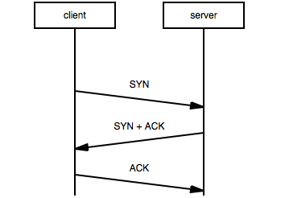
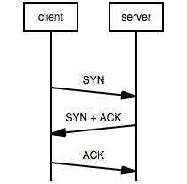
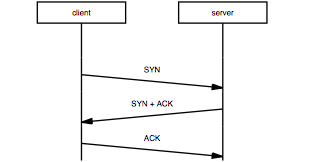
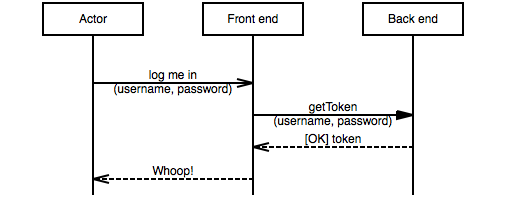
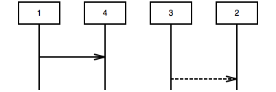
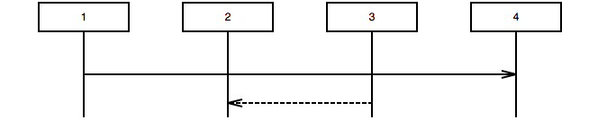
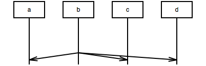
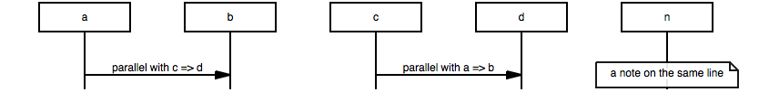
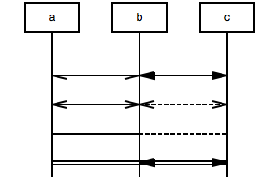
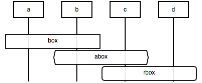

Language tutorial
Basics
a sends a signal to b
The most simple sequence chart you can draw is one where an entity a sends a signal to an entity b
a -> b;

As you can see this creates two entities (a and b), both with a lifeline, and an arrow from the first to the second lifeline.
Adding labels
To show what the signal entailed, add a label behind the signal, like so:
a -> b: "ping";

Note: when your description doesn't contain a , or a ;
it is possible to leave the quotes out of the label, so in this case
a -> b: ping; would have achieved exactly the same effect.
b replies to a
Adding extra parts to the conversation works along the same lines
a -> b: ping; b >> a: heard ya!;

There is a plethora of arcs (arrows, lines) at your disposal. We've thrown a small cheat sheet together that sums up the basic ones (svg, png). As we've been using it quite a lot, we've put it behind the (?) button in the online demo as well.
Notes
To add a note to a chart use the special note arc type.
a -> b: ping; b >> a: heard ya!; a note a: we're not done yet ...;

Multiline text
a note b: This is a note consisting of\ntwo lines of text; b => c : Breaking text in two\nalso works for arcs;

Empty rows, omitted rows, comments
Sometimes your chart needs some more space between arcs, e.g. to emphasise grouping.
a =>> b: do something for me; b >> a: done; |||; a => c : "b is done doing something;\ngo bother him"; c -> b : bother;

To indicate you deliberately left out stuff of your chart, you can use ellipses, like this:
a =>> b: Do the voodoo; b => c : Iberian dance task; c -x b : Whaaat?; ... : magic happens here; b >> a : Magic answer;

To demarcate more strongly and/ or to comment on a part, use comment (---), like so:
a =>> b: readOutLoud\n(message); --- : for each line in the message:; b => "text to\nspeach": getAudio (line); "text to\nspeach" >> b: lAudioStream; b -> speaker: play(lAudioStream);

Ignore this
In your program lines starting with # or //
are ignored, as is everything between /* c-style block comments */
# This line is ignored a =>> b: what's happening here? ; /* honestly don't know */ // ignored line

Caveat: on translating to mscgen all ignorable text get lost.
Advanced stuff
Options: arcgradient, hscale, width
With arcgradient all lines get skewed a little.
Options go on top
arcgradient="10"; client => server : SYN; server => client : SYN + ACK; client => server : ACK;
hscale horizontally scales the chart a bit. Numbers bigger than 1 enlarge it; smaller than 1 shrink it.
arcgradient="10", hscale="0.6"; client => server : SYN; server => client : SYN + ACK; client => server : ACK;
... and width scales the whole chart so it fits in exactly the amount of pixels width.
arcgradient="10", width="240"; client => server : SYN; server => client : SYN + ACK; client => server : ACK;
Explicit entity declarations: labeling entities, use your own order
To prevent you from having to enter long entity names in each line, you can explicitly declare entity names at the start of your script and give them labels.
A: Actor, fe:Front end, be: Back end; A =>> fe: "log me in\n(id, secret)"; fe => be: "getToken\n(id, secret)"; fe << be: [OK] token; A << fe: Whoop!;
The msgenny parser puts the entities in the order they occur in your script, e.g.
1 =>> 4; 3 >> 2;
If that's not what you want, declare them in the order you want them to appear:
1,2,3,4; 1 =>> 4; 3 >> 2;
broadcasts, parallel calls
When an entity has to send a message to all entities at once (broadcast) use * as entity name.
When you use this it is practical to use the arcgradient option to prevent lins from overlapping.
arcgradient="14"; a, b, c, d; b =>> *;
In situations where you want to epress two calls being executed in parallel (or for some
other reason want to see two arcs on one row), seperat them with a , in stead
of with a ;
a, b, c, n; a => b: parallel\nwith c => b, c => b: parallel\nwith a => b, n note n: a note on\nthe same line;
Both ways, no way
For almost every arc type (->, =>, =>>,
>>, :>) a two way variant exists, as well as a variant
without arrows:
a <-> b, b <=> c; a <<=>> b, b <<>> c; a -- b, b .. c; a :: b, b <:> c ;
box, rbox, abox
State and condition boxes are part of the origin mscgen standard, and hence they're supported in ms genny as well.
a box b : box; b abox c : abox; c rbox d : rbox;